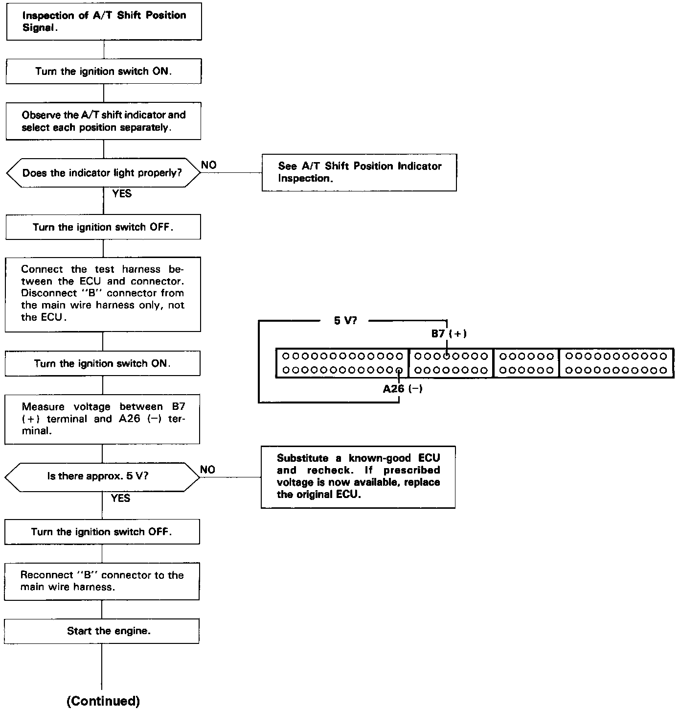
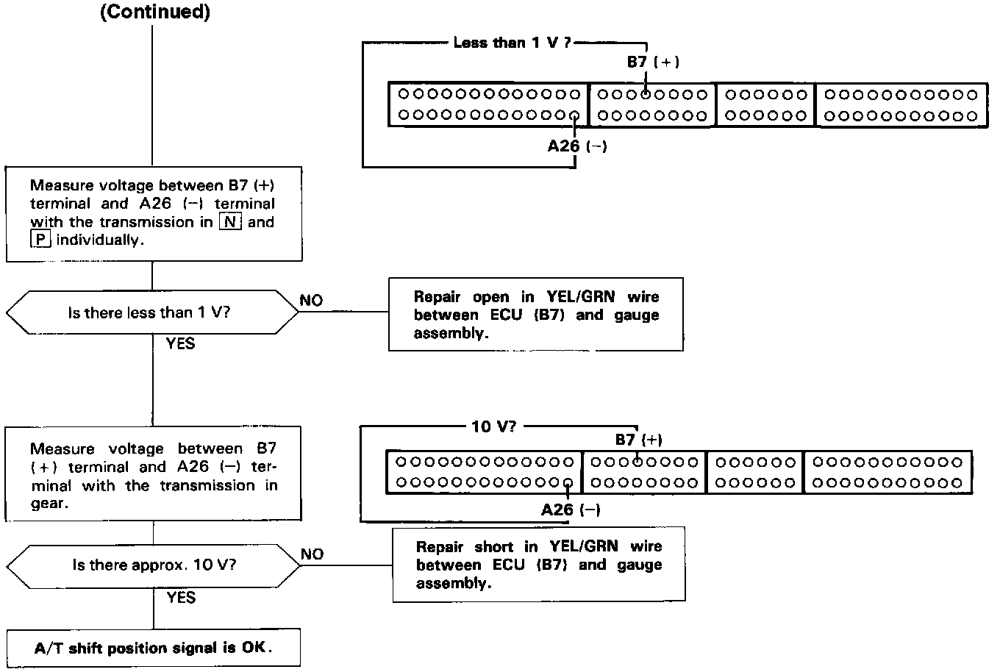

Operation CHARM
: Car repair manuals for everyone.
Home
>>
Acura
>>
1992
>>
Vigor L5-2451cc 2.5L SOHC G25A4 FI
>>
Repair and Diagnosis
>>
Powertrain Management
>>
Computers and Control Systems
>>
Testing and Inspection
>>
Component Tests and General Diagnostics
>>
Automatic Transaxle (A/T) Gear Position Signal
Automatic Transaxle (A/T) Gear Position Signal


This signals the ECU when the transmission is in Neutral or Park.